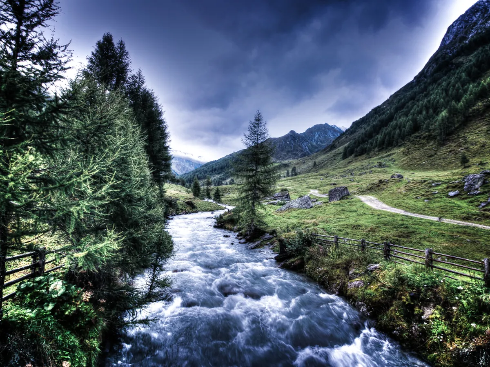
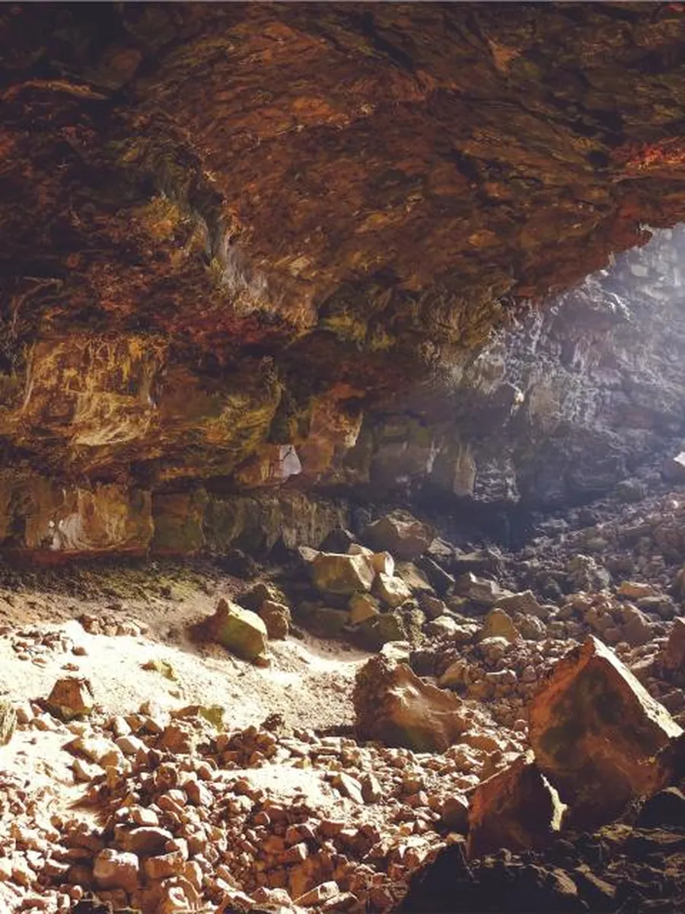

01 / 05 빗방울 · 강원 인제 · 고도 1,200 m
한 방울이
떨어진다
구름의 무게가 견딜 수 없을 만큼 무거워진 밤, 인제 기린면의 산등성이 위로 비가 내립니다. 이 한 방울은 아직 아무 이름도 없습니다.
- 연평균 강수량
- 1,340 mm
- 낙하 속도
- 초속 9 m
물의 기억淡水 · 담수 캠페인
이 한 병은 어디서 왔을까요. 스크롤은 깊이입니다.
01 / 05 빗방울 · 강원 인제 · 고도 1,200 m
구름의 무게가 견딜 수 없을 만큼 무거워진 밤, 인제 기린면의 산등성이 위로 비가 내립니다. 이 한 방울은 아직 아무 이름도 없습니다.
02 / 05 지하 · 표토층 · 깊이 12 m
흙과 낙엽, 잔뿌리 사이를 지나 빛이 닿지 않는 곳으로. 여기서부터 시간은 다르게 흐릅니다.
03 / 05 암반 · 화강암 대수층 · 깊이 240 m
화강암의 틈은 사람 머리카락보다 좁습니다. 물은 그 틈을 하루 몇 센티미터씩 지나며 미네랄을 하나씩 기억합니다.
04 / 05 샘 · 자연 용출 · 깊이 0 m
지층의 압력이 물을 위로 밀어 올립니다.
42년 만에 처음 보는 하늘,
처음 닿는 바람.
사람들은 이 자리를 담수(淡水)라 부릅니다.
05 / 05 병 · 당신의 손 · 깊이 0 m
여정은 여기서 끝나지 않습니다. 뚜껑을 여는 순간, 42년의 기억이 한 모금이 됩니다.
취수정 2호 주변을 2026년 3월에 기록했습니다. 화면 속 여정은 이 계곡의 실제 수문 자료를 바탕으로 그렸고, 사진은 그날 새벽 5시부터 오전 10시 사이에 찍은 것입니다.


"여기 물은 서두르지 않아요. 42년을 내려왔으니까, 하루 이틀 늦게 나온다고 큰일 나지 않죠. 우리가 할 일은 그 속도를 망치지 않는 겁니다." 최영남 · 담수 수원지 관리인 · 재직 17년 · 매일 아침 수온을 손으로 먼저 잰다
담수 병 하나가 여정 카드 한 장이 됩니다. 발급된 카드 1장당 100원이 인제 기린면 계곡 정화 기금으로 적립되며, 목표액과 적립 현황은 매주 월요일 이 페이지에서 공개합니다.
2026.09.01(화) — 2026.10.31(토)
총 61일 · 온라인 참여 24시간 · 오프라인 전시는 아래 운영시간 참고DS-0000-0000 형식의 코드를 참여 창에 입력합니다.모든 용기는 재생 PET 100 %, 라벨은 물에 쉽게 분리되는 수용성 접착제를 사용합니다. 편의점 2+1 행사는 9월 한 달간 진행됩니다.
* 여정 카드 발급은 1인 1일 최대 10장, 캠페인 기간 종료 후 30일까지 코드 유효. 적립 기금은 (재)담수물환경재단이 관리하며 집행 내역은 2026년 12월 결산 후 공개됩니다.
병 뒷면의 코드를 입력하면 이 물이 언제 떨어졌고, 얼마나 오래 내려왔고, 언제 병에 담겼는지 적힌 여정 카드를 드립니다. 코드가 없어도 체험 코드로 먼저 열어볼 수 있습니다.